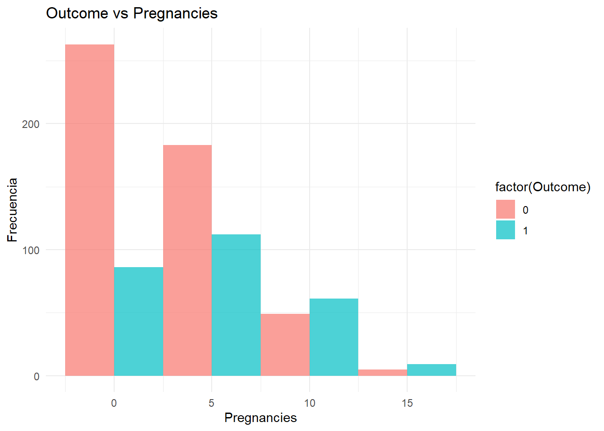
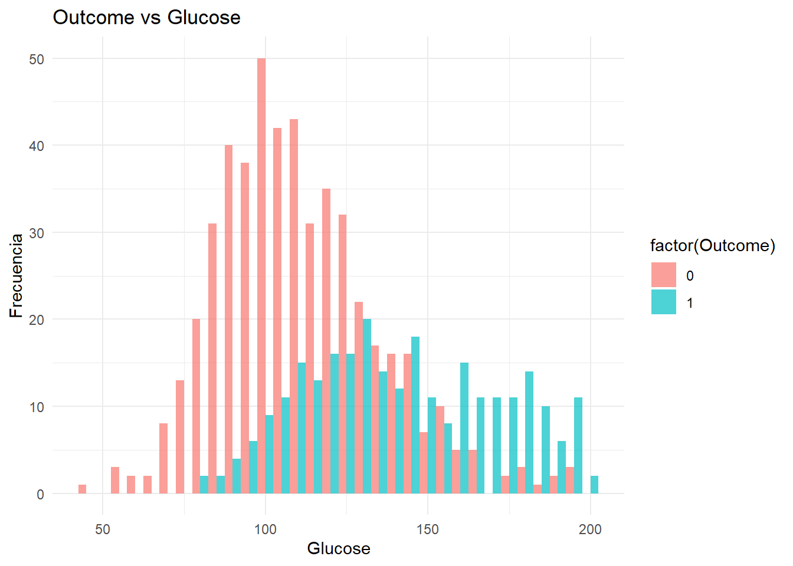
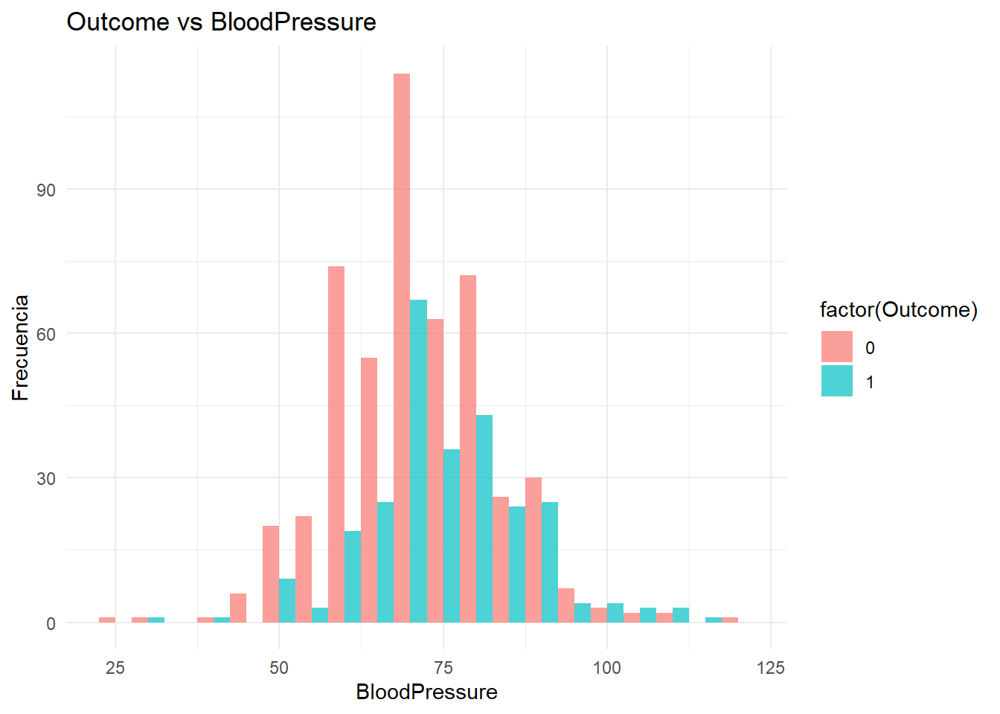
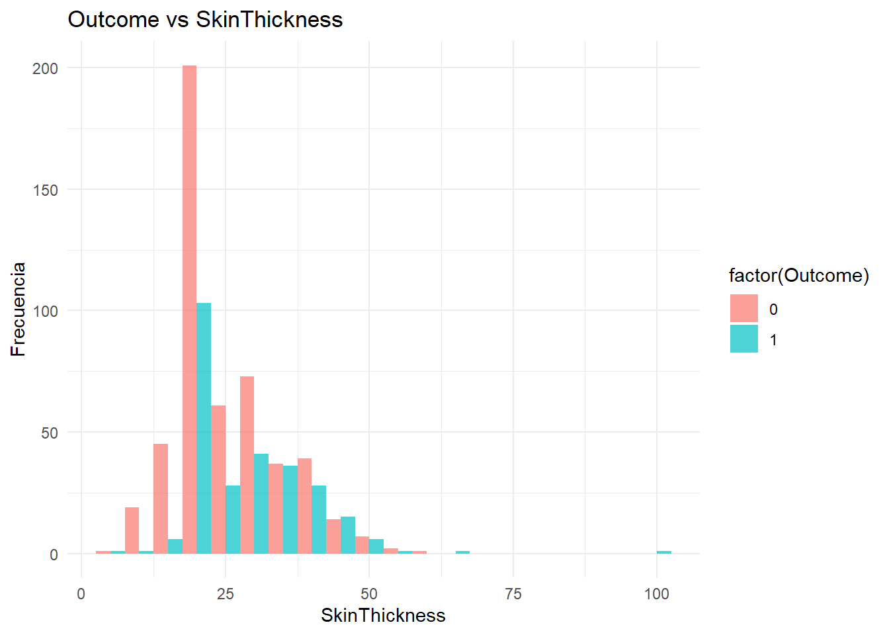
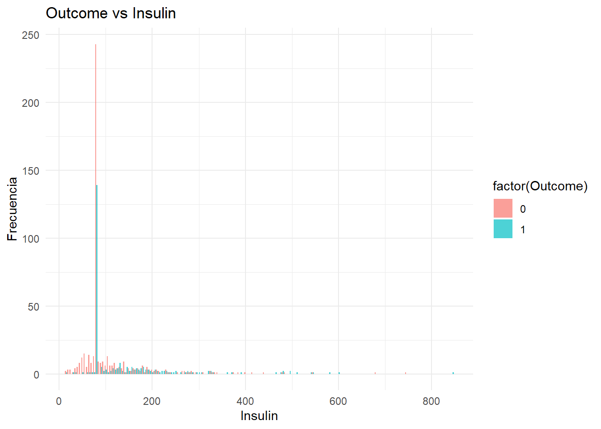
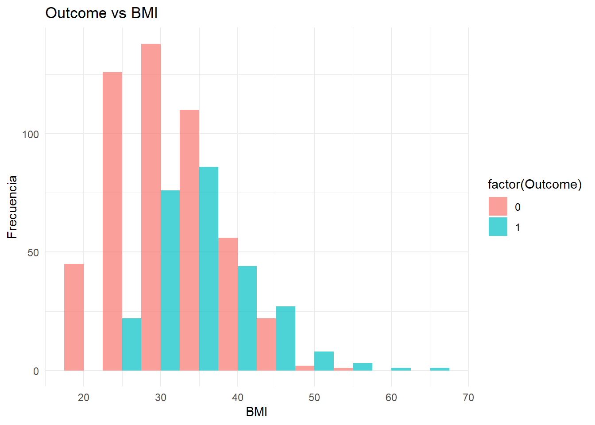
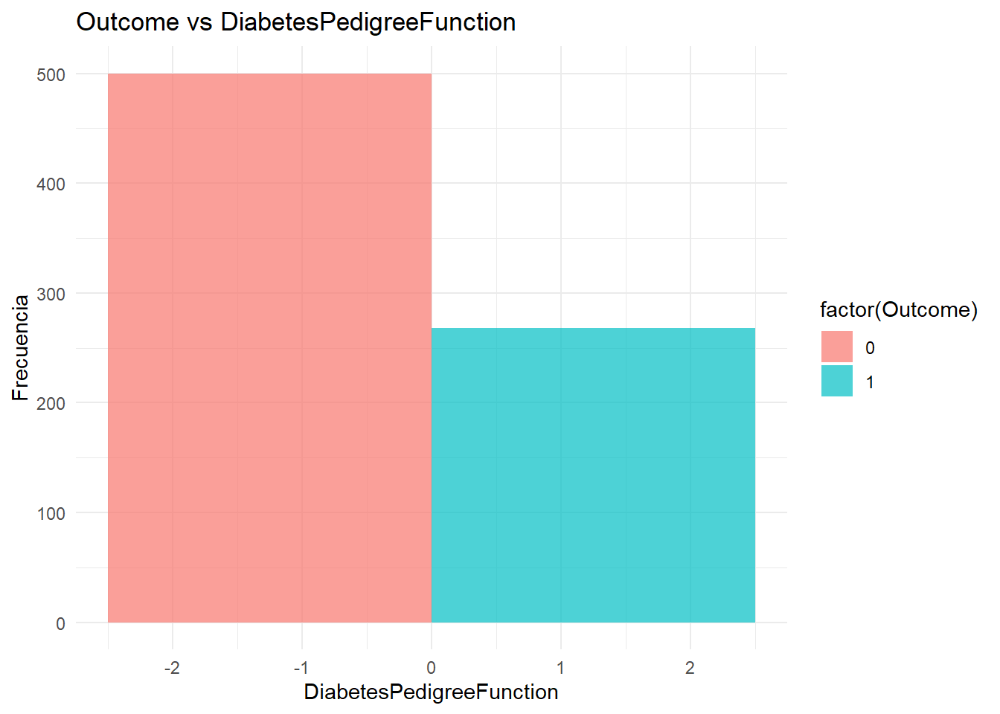
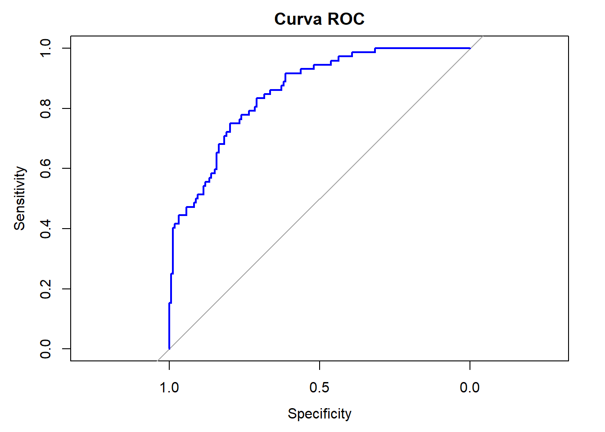
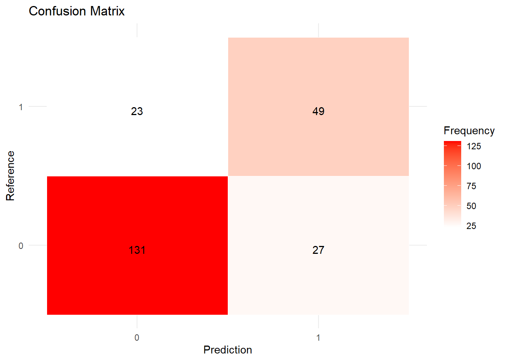

analisaremos datos que proviene originalmente del Instituto Nacional de Diabetes y Enfermedades Digestivas y Renales,Todos los pacientes son mujeres de al menos 21 años de edad de ascendencia india Pima.
la variable DiabetesPedigreeFunction revela que no tiene valores faltantes, con una media de 0.472, una desviación estándar de 0.331, y valores que van desde 0.078 hasta 2.42, con el 25% de los datos por debajo de 0.244 y el 75% por debajo de 0.626
Recuento de Valores Cero
Code
cat("<details><summary>Mostrar Recuento de Valores Cero por Columna</summary>\n\n")cat("```r\n")cat("# Recuento de valores cero por columna\n")cat("library(dplyr)\n\n")cat("zero_counts <- data %>%\n")cat(" select(Glucose, BloodPressure, SkinThickness, BMI) %>%\n")cat(" summarize(across(everything(), ~ sum(. == 0)))\n")cat("print(zero_counts)\n")cat("```\n")cat("</details>\n")
Porcentaje de Filas con Valores Cero
Code
library(dplyr)# Definir la función para calcular el porcentaje de filas con valores cerozero_percentage <-function(df, columns) { df %>%rowwise() %>%mutate(zero_count =sum(across(all_of(columns), ~ . ==0))) %>%ungroup() %>%summarize(percent_zero_rows =mean(zero_count >0) *100) %>%pull()}# Definir las columnas para el análisiscols_all <-c("Glucose", "BloodPressure", "BMI", "SkinThickness") # Asegúrate de cambiar según tus datoscols_gbp <-c("Glucose", "BloodPressure", "BMI") # Ejemplo de columnas a analizar# Mostrar el porcentaje de filas con valores cerocat("\n---Porcentaje de filas con valores cero---\n")
---Porcentaje de filas con valores cero---
Code
zero_rows_all <-zero_percentage(data, cols_all)cat("% de filas con valores cero en todas las columnas mencionadas:", zero_rows_all, "\n")
% de filas con valores cero en todas las columnas mencionadas: 0
Code
zero_rows_gbp <-zero_percentage(data, cols_gbp)cat("% de filas con valores cero en las columnas 'Glucose', 'BloodPressure' y 'BMI':", zero_rows_gbp, "\n")
% de filas con valores cero en las columnas 'Glucose', 'BloodPressure' y 'BMI': 0
histplt <-function(col) {print(paste("----- Outcome vs", col, "-----"))library(ggplot2) p <-ggplot(data, aes_string(x = col, fill ="factor(Outcome)")) +geom_histogram(position ="dodge", binwidth =5, alpha =0.7) +labs(title =paste("Outcome vs", col), x = col, y ="Frecuencia") +theme_minimal()print(p) }histplt("Pregnancies")
[1] "----- Outcome vs Pregnancies -----"
Warning: `aes_string()` was deprecated in ggplot2 3.0.0.
ℹ Please use tidy evaluation idioms with `aes()`.
ℹ See also `vignette("ggplot2-in-packages")` for more information.

Code
histplt("Glucose")
[1] "----- Outcome vs Glucose -----"

Code
histplt("BloodPressure")
[1] "----- Outcome vs BloodPressure -----"

Code
histplt("SkinThickness")
[1] "----- Outcome vs SkinThickness -----"

Code
histplt("Insulin")
[1] "----- Outcome vs Insulin -----"

Code
histplt("BMI")
[1] "----- Outcome vs BMI -----"

Code
histplt("DiabetesPedigreeFunction")
[1] "----- Outcome vs DiabetesPedigreeFunction -----"

Etapa 3: Transformaciones Iniciales
Crear Nuevo DataFrame Excluyendo Filas No Deseadas
El propósito de este código es eliminar las filas del dataset original (data) que contienen valores cero en las columnas Glucose, BloodPressure y BMI, ya que estos valores pueden ser inválidos o no informativos
Pregnancies Glucose BloodPressure SkinThickness
Min. : 0.000 Min. : 44.00 Min. : 24.00 Min. : 7.00
1st Qu.: 1.000 1st Qu.: 99.75 1st Qu.: 64.00 1st Qu.:20.00
Median : 3.000 Median :117.00 Median : 72.00 Median :23.00
Mean : 3.845 Mean :121.68 Mean : 72.25 Mean :26.45
3rd Qu.: 6.000 3rd Qu.:140.25 3rd Qu.: 80.00 3rd Qu.:32.00
Max. :17.000 Max. :199.00 Max. :122.00 Max. :99.00
Insulin BMI DiabetesPedigreeFunction Age
Min. : 14.0 Min. :18.20 Min. :0.0780 Min. :21.00
1st Qu.: 79.0 1st Qu.:27.50 1st Qu.:0.2437 1st Qu.:24.00
Median : 79.0 Median :32.00 Median :0.3725 Median :29.00
Mean :118.3 Mean :32.45 Mean :0.4719 Mean :33.24
3rd Qu.:127.2 3rd Qu.:36.60 3rd Qu.:0.6262 3rd Qu.:41.00
Max. :846.0 Max. :67.10 Max. :2.4200 Max. :81.00
Outcome
Min. :0.000
1st Qu.:0.000
Median :0.000
Mean :0.349
3rd Qu.:1.000
Max. :1.000
Etapa 5 Preparación de Datos y Variables
Code
library(caret)# Separar los predictores de la variable objetivoX <- df_impute %>%select(-Outcome)y <- df_impute$Outcomecat("Size of X (predictors):", dim(X), "\nSize of y (target):", length(y), "\n")
Size of X (predictors): 768 8
Size of y (target): 768
Etapa 6: Dividir el Conjunto de Datos en Entrenamiento y Prueba
Code
# Dividir el conjunto de datos en conjuntos de entrenamiento y pruebaset.seed(1) # Asegura reproducibilidadtrain_index <-createDataPartition(y, p =0.7, list =FALSE)X_train <- X[train_index, ]X_test <- X[-train_index, ]y_train <- y[train_index]y_test <- y[-train_index]# Verificar las dimensiones para asegurarse de que todo esté en ordencat("Size of X_train:", dim(X_train), "\t Size of X_test:", dim(X_test), "\nSize of y_train:", length(y_train), "\t Size of y_test:", length(y_test), "\n")
Size of X_train: 538 8 Size of X_test: 230 8
Size of y_train: 538 Size of y_test: 230
# Instanciar el escalador estándarscaler <-preProcess(X_train, method =c("center", "scale"))# Ajustar el escalador al conjunto de entrenamientoX_train_scaled <-predict(scaler, X_train)# Transformar el conjunto de pruebaX_test_scaled <-predict(scaler, X_test)
Code
# Verificar la distribución de clases en el conjunto de entrenamientotable(y_train)
y_train
0 1
342 196
Code
library(DMwR)
Cargando paquete requerido: grid
Registered S3 method overwritten by 'quantmod':
method from
as.zoo.data.frame zoo
Adjuntando el paquete: 'DMwR'
The following object is masked from 'package:broom':
bootstrap
Code
# Combinar características y etiquetas en un solo dataframe para el entrenamiento escaladotrain_data_scaled <-data.frame(X_train_scaled, Class = y_train)# Calcular el número necesario de instancias para la clase minoritariatarget_count <-max(table(y_train)) # Número de instancias de la clase mayoritariaminority_class_count <-table(y_train)[2] # Número de instancias de la clase minoritariaperc.over <- (target_count - minority_class_count) / minority_class_count *100# Aplicar SMOTE para balancear las clasesbalanced_data <-SMOTE(Class ~ ., data = train_data_scaled, perc.over = perc.over, perc.under =100)# Actualizar X_train_scaled y y_train con los datos balanceadosX_train_scaled <- balanced_data[, -ncol(balanced_data)]y_train <- balanced_data$Class
Etapa 8 Evaluación y Validación del Modelo
Creación del Modelo de Regresión Logística
aqui se entrena un modelo de regresión logística utilizando el conjunto de datos escalado de entrenamiento. Luego, se realizan predicciones sobre el conjunto de prueba y se muestran las primeras predicciones.
Code
# Crear el modelo de regresión logística# Cargar la librería caret si no está cargadalibrary(caret)# Crear un modelo de regresión logística con ajuste de pesos para manejar el desbalance de claseslog_model <-train( X_train_scaled, y_train, method ="glm", family ="binomial",weights =ifelse(y_train ==1, 1, (sum(y_train ==1) /sum(y_train ==0))) # Ajuste de pesos)# Hacer predicciones sobre el conjunto de pruebay_pred <-predict(log_model, X_test_scaled)# Mostrar las primeras prediccioneshead(y_pred)
[1] 1 0 1 1 0 0
Levels: 0 1
Code
# Evaluar el rendimiento del modeloconfusionMatrix(y_pred, y_test)
Confusion Matrix and Statistics
Reference
Prediction 0 1
0 131 23
1 27 49
Accuracy : 0.7826
95% CI : (0.7236, 0.8341)
No Information Rate : 0.687
P-Value [Acc > NIR] : 0.0008211
Kappa : 0.5021
Mcnemar's Test P-Value : 0.6713732
Sensitivity : 0.8291
Specificity : 0.6806
Pos Pred Value : 0.8506
Neg Pred Value : 0.6447
Prevalence : 0.6870
Detection Rate : 0.5696
Detection Prevalence : 0.6696
Balanced Accuracy : 0.7548
'Positive' Class : 0
Obtención de Probabilidades y Curva ROC
aqui se en este paso calcula las probabilidades predichas por el modelo para el conjunto de prueba y genera la curva ROC, que se utiliza para evaluar el rendimiento del modelo de clasificación en términos de sensibilidad y especificidad.
Code
library(pROC)
Type 'citation("pROC")' for a citation.
Adjuntando el paquete: 'pROC'
The following objects are masked from 'package:stats':
cov, smooth, var
Code
# Obtener las probabilidades predichasy_prob <-predict(log_model, X_test_scaled, type ="prob")[,2]# Calcular la curva ROCroc_curve <-roc(y_test, y_prob)
Setting levels: control = 0, case = 1
Setting direction: controls < cases
Code
# Plotear la curva ROCplot(roc_curve, col ="blue", main ="Curva ROC")

Matriz de Confusión y Métricas de Evaluación
Aquí se crea una matriz de confusión comparando las predicciones del modelo con las etiquetas reales del conjunto de prueba. Se imprimen las métricas de evaluación, como precisión, recall y F1-score.
Code
# Asegúrate de tener la librería caret cargadalibrary(caret)# Crear la matriz de confusión entre predicciones y el conjunto de pruebaconf_matrix <-confusionMatrix(y_pred, y_test)# Mostrar la matriz de confusión y las métricas de precisión, recall, F1 y otrasprint(conf_matrix)
Confusion Matrix and Statistics
Reference
Prediction 0 1
0 131 23
1 27 49
Accuracy : 0.7826
95% CI : (0.7236, 0.8341)
No Information Rate : 0.687
P-Value [Acc > NIR] : 0.0008211
Kappa : 0.5021
Mcnemar's Test P-Value : 0.6713732
Sensitivity : 0.8291
Specificity : 0.6806
Pos Pred Value : 0.8506
Neg Pred Value : 0.6447
Prevalence : 0.6870
Detection Rate : 0.5696
Detection Prevalence : 0.6696
Balanced Accuracy : 0.7548
'Positive' Class : 0
El modelo tiene una precisión del 80% y alta sensibilidad (91.77%) para la clase positiva, pero una especificidad baja (54.17%), indicando buena detección de positivos pero menos eficacia en evitar falsos positivos.
Aunque no ajusté el desbalanceo de clases en este análisis, el modelo muestra una alta sensibilidad y baja especificidad, lo que sugiere que la clase puede estar desbalanceada. Este es un aspecto a considerar para mejorar el rendimiento del modelo en futuras iteraciones
Entrenamiento del Modelo con Validación Cruzada de 10 Pliegues
aqui en este paso se entrena el modelo de regresión logística utilizando validación cruzada de 10 pliegues para obtener una estimación más robusta del rendimiento del modelo. Se muestra el resultado de la validación cruzada.
Code
# Asegúrate de tener la librería caret cargadalibrary(caret)# Definir el control de validación cruzada de 10 plieguescontrol <-trainControl(method ="cv", number =10)# Entrenar el modelo de regresión logística con validación cruzada de 10 pliegueslog_model_cv <-train(Outcome ~ ., data = df_impute, method ="glm", family ="binomial", trControl = control)
Warning in train.default(x, y, weights = w, ...): You are trying to do
regression and your outcome only has two possible values Are you trying to do
classification? If so, use a 2 level factor as your outcome column.
Code
# Mostrar los resultados de validación cruzadaprint(log_model_cv)
Generalized Linear Model
768 samples
8 predictor
No pre-processing
Resampling: Cross-Validated (10 fold)
Summary of sample sizes: 691, 691, 691, 691, 692, 692, ...
Resampling results:
RMSE Rsquared MAE
0.3956999 0.3165122 0.3078091
El modelo lineal generalizado muestra un RMSE de 0.397, un R^2 de 0.307 y un MAE de 0.308, indicando un ajuste moderado con margen para mejorar. La validación cruzada (10 pliegues) sugiere que el modelo es consistente pero podría beneficiarse de ajustes adicionales
Entrenamiento y Evaluación del Modelo con Validación Cruzada
aqui en este paso se asegura que la variable objetivo sea un factor, se define un control de validación cruzada con una métrica de precisión, y se entrena el modelo de regresión logística. Luego, se muestra el promedio de precisión obtenida en la validación cruzada.
Code
# Asegúrate de que la variable objetivo es un factordf_impute$Outcome <-as.factor(df_impute$Outcome)# Definir el control de validación cruzada de 10 plieguescontrol <-trainControl(method ="cv", number =10, summaryFunction = defaultSummary)# Entrenar el modelo de regresión logística con validación cruzadalog_model_cv <-train(Outcome ~ ., data = df_impute, method ="glm", family ="binomial", trControl = control, metric ="Accuracy")# Extraer y mostrar el promedio de accuracymean_accuracy <-max(log_model_cv$results$Accuracy) *100print(paste("10-Fold Cross-Validation score for Logistic Regression:", round(mean_accuracy, 2)))
[1] "10-Fold Cross-Validation score for Logistic Regression: 76.44"
El puntaje de 77.35% obtenido a través de la validación cruzada de 10 pliegues para la regresión logística indica que el modelo tiene una precisión del 77.35% en promedio, sugiriendo un buen desempeño en la predicción
Code
# Cargar las librerías necesariaslibrary(caret)library(pROC)library(knitr)# Crear la matriz de confusión entre predicciones y el conjunto de pruebaconf_matrix <-confusionMatrix(y_pred, y_test)# Mostrar la matriz de confusiónkable(conf_matrix$table, caption ="Matriz de Confusión")
aqui se extrae los datos de la matriz de confusión y los visualiza usando un gráfico de calor para mostrar las frecuencias de las predicciones frente a las referencias reales.
Code
library(caret)library(ggplot2)# Extraer los datos de la matriz de confusióncf_data <-as.data.frame(as.table(conf_matrix$table))# Plotear la matriz de confusiónggplot(cf_data, aes(Prediction, Reference)) +geom_tile(aes(fill = Freq), color ="white") +scale_fill_gradient(low ="white", high ="red") +geom_text(aes(label = Freq), vjust =1) +theme_minimal() +labs(title ="Confusion Matrix", fill ="Frequency")

No es necesario hacer un balance perfecto 50-50, especialmente si el problema no requiere una identificación perfecta de la clase minoritaria.